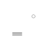
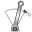
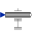
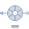

PartialElementaryOneFlangeAndSupport2Partial model for a component with one rotational 1-dim. shaft flange and a support used for textual modeling, i.e., for elementary models |

|
Information
This information is part of the Modelica Standard Library maintained by the Modelica Association.
This is a 1-dim. rotational component with one flange and a support/housing. It is used to build up elementary components of a drive train with equations in the text layer.
If useSupport=true, the support connector is conditionally enabled
and needs to be connected.
If useSupport=false, the support connector is conditionally disabled
and instead the component is internally fixed to ground.
Parameters (1)
| useSupport |
Value: false Type: Boolean Description: = true, if support flange enabled, otherwise implicitly grounded |
|---|
Connectors (2)
Extended by (7)
|  |
Modelica.Mechanics.Rotational.Interfaces
Partial model of a torque acting at the flange (accelerates the flange) |
|
Modelica.Mechanics.Rotational.Sources
Input signal acting as external torque on a flange |
|
|  |
Modelica.Mechanics.Rotational.Sources
Forced movement of a flange according to an angle, speed and angular acceleration signal |
|
Modelica.Mechanics.Rotational.Sources
Forced movement of a flange according to an acceleration signal |
|
|
Modelica.Mechanics.Rotational.Sources
Forced movement of a flange according to a reference angular velocity signal |
|
|
Modelica.Mechanics.Rotational.Sources
Forced movement of a flange according to a reference angle signal |
|
|  |
Modelica.Electrical.Machines.Sensors
Hall sensor |